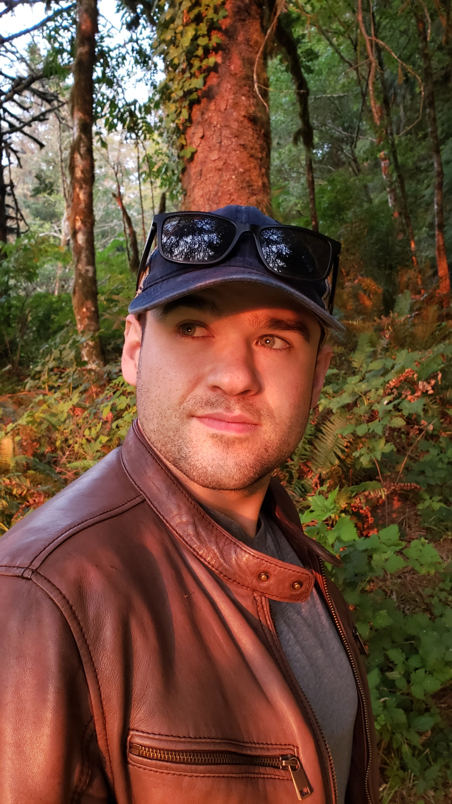
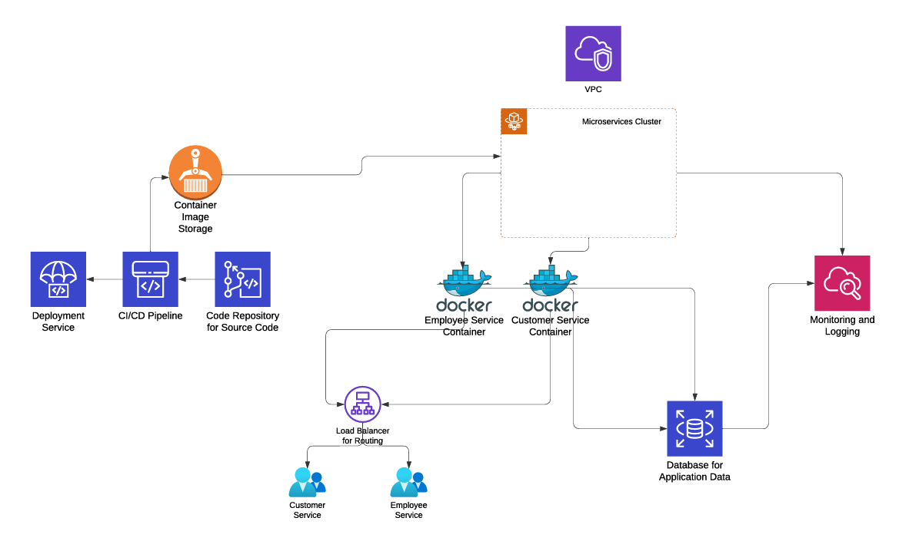
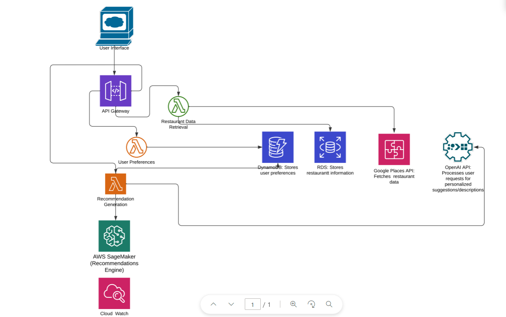
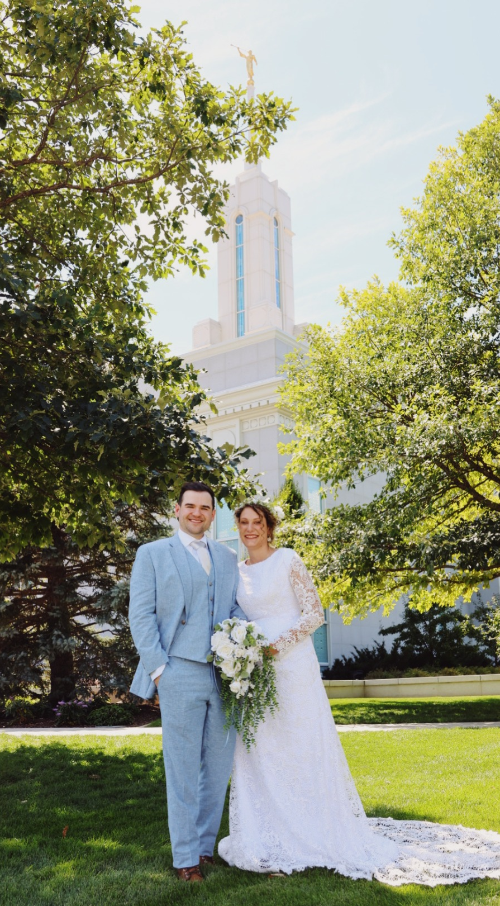
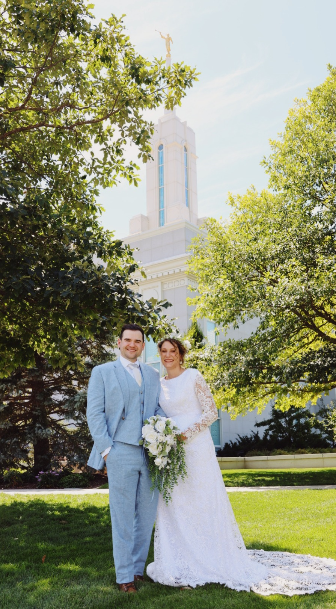

Home Page
About Me: My name is Brandon Pew, and I'm a senior cloud computing student at BYU-I. This site is designed to showcase my skills in cloud infrastructure, web development, and DevOps.

Projects
Cloud Computing Projects: I have experience working on projects like the FoodieFinder app, AWS Lambda automation, and containerized microservices. These projects demonstrate my ability to create scalable cloud solutions.
 About Me
My Journey: I am passionate about technology and learning. My interests include web scraping, cloud infrastructure, and automation. Outside of tech, I enjoy spending time with my family and exploring the outdoors.
 
